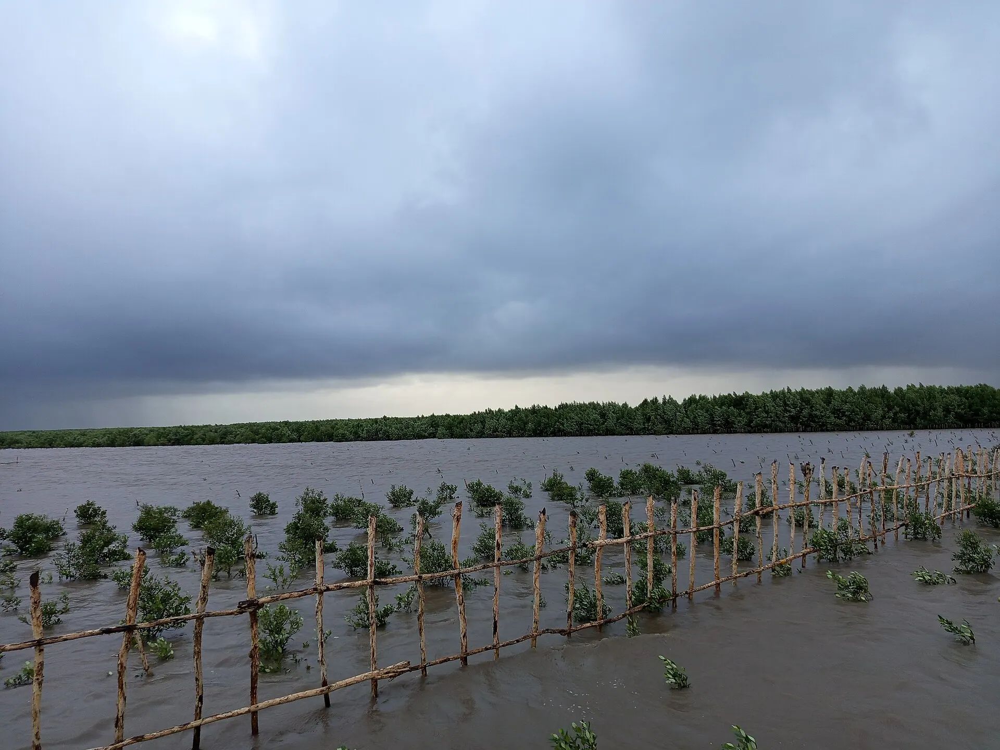

Cua Cà Mau
Cua gạch son, thịt chắc – hấp bia, rang me hoặc nướng muối ớt.

Mũi Cà Mau là điểm cực Nam trên đất liền Việt Nam, nơi có cột mốc tọa độ quốc gia GPS 0001, biểu tượng con tàu hướng ra biển Đông và vùng rừng ngập mặn mỗi năm lấn biển hàng chục mét. Hành trình về "Đất Mũi" là dịp đi xuồng qua những con kênh rợp bóng đước, ăn cua, ba khía Cà Mau và ghé rừng tràm U Minh Hạ.
Đang tải thời tiết...
Bấm vào một tháng để xem có nên đi không
Cua gạch son, thịt chắc – hấp bia, rang me hoặc nướng muối ớt.
Ba khía muối trộn tỏi ớt, chanh đường – ăn với cơm trắng.
Lẩu mắm cá linh, cá sặc với hàng chục loại rau đồng.
Ảnh minh họa: Mắm cá lócLẩu mắm, cá kèo nướng
TP. Cà Mau Cập nhật 10/2026 Báo saiCua hấp, tôm nướng, ba khía
Thị trấn Năm Căn Cập nhật 10/2026 Báo saiCá, tôm, sò huyết nướng
Khu du lịch Mũi Cà Mau Cập nhật 10/2026 Báo saiBánh canh, hủ tiếu, tôm khô
Chợ Phường 2, TP. Cà Mau Cập nhật 10/2026 Báo saiCá kèo nướng muối ớt, ba khía trộn
TP. Cà Mau Cập nhật 10/2026 Báo saiBún nước lèo
TP. Cà Mau Cập nhật 10/2026 Báo saiBánh xèo tôm, ốc gạo
TP. Cà Mau Cập nhật 10/2026 Báo saiBánh tằm cay nước cốt dừa
Phường Bạc Liêu, Cà Mau Cập nhật 10/2026 Báo saiGiá tham khảo mỗi người. Bấm địa chỉ để mở Google Maps xem giờ mở cửa và đánh giá mới nhất.
Chụp ảnh ở điểm cực Nam, nơi mặt trời mọc và lặn trên biển.
Ngắm toàn cảnh rừng đước và biển Đông từ trên cao.
Len lỏi qua kênh rạch, xem nghề câu ba khía, đặt lú bắt tôm.
Đi xuồng giữa rừng tràm, tìm hiểu nghề ăn ong lấy mật.
Tự gợi ý theo điểm đến và tháng đi (chọn ngày khởi hành ở phần Lịch trình để đổi tháng). Đánh dấu để ghi nhớ món đã chuẩn bị.
Thấy giá vé, giờ mở cửa hay quán đã thay đổi? Báo sai
400k–1,2tr / đêm
Nhiều lựa chọn, tiện đi các nơi.
250k–600k / đêm
Ngủ gần mũi đất để đón bình minh.
300k–700k / đêm
Điểm dừng giữa đường ra Đất Mũi.
Bay tới Cà Mau (CAH) hoặc Cần Thơ (VCA); xe khách Sài Gòn – Cà Mau ~8 giờ. Từ TP. Cà Mau ra Đất Mũi đi ô tô hoặc cano.
| Từ Hà Nội |
|
|---|---|
| Từ Đà Nẵng |
|
| Từ TP. Hồ Chí Minh |
|
Thời gian ước tính lúc di chuyển, giá một chiều / người mức tiết kiệm – tham khảo. Phương án in đậm là gợi ý.
Giá phòng tham khảo cho 2 người/đêm, cao hơn vào lễ Tết và cuối tuần. Việt Travel không nhận hoa hồng từ các trang đặt chỗ.
Việt Travel · Cà Mau · Thời điểm đẹp: Tháng 12 – 4
Bay tới Cà Mau hoặc đi xe từ Cần Thơ, ăn sáng bánh canh, hủ tiếu.
Chợ nổi Cà Mau, công viên Hùng Vương, quảng trường Bông Súng.
Lẩu mắm U Minh, cua rang me.
Dạo phố đêm một chút rồi về nơi ở nghỉ ngơi
Đi ô tô hoặc cano ra Đất Mũi qua Năm Căn.
Cột mốc GPS 0001, biểu tượng con tàu, tháp vọng hải đài.
Dạo phố đêm một chút rồi về nơi ở nghỉ ngơi
Đi xuồng xuyên rừng đước, xem nghề câu ba khía.
Hòn Đá Bạc hoặc cồn Ông Trang ven biển.
Về Năm Căn ăn hải sản.
Dạo phố đêm một chút rồi về nơi ở nghỉ ngơi
Kết thúc tour: trả phòng, mua đặc sản và di chuyển về.
Ăn sáng tại nơi ở (thường đã gồm trong giá phòng)
Đi xuồng giữa rừng tràm U Minh Hạ.
Về TP. Cà Mau, dạo chợ đêm.
Dạo phố đêm một chút rồi về nơi ở nghỉ ngơi
Kết thúc tour: trả phòng, mua đặc sản và di chuyển về.
Ăn sáng quán bình dân đông người địa phương gần nơi ở
Đi xe tới Bạc Liêu, nhà Công tử Bạc Liêu.
Cơm trưa bình dân gần điểm tham quan
Cánh đồng điện gió ven biển, rồi về Cần Thơ hoặc Sài Gòn.
Ăn tối gần nơi ở – chọn quán đông khách địa phương
Kết thúc hành trình.
Kết thúc tour: trả phòng, mua đặc sản và di chuyển về.
Chi tiết mức tiết kiệm
Chi tiết mức thoải mái
Chi tiết mức tiết kiệm
Chi tiết mức thoải mái
Chi tiết mức tiết kiệm
Chi tiết mức thoải mái
Chưa gồm vé máy bay/tàu xe tới Mũi Cà Mau. Giá tham khảo, thay đổi theo mùa.
Bảng giá vé & giờ mở cửa các điểm tham quan ở Mũi Cà Mau
Muốn đi nhiều nơi trong một chuyến? Ghép Mũi Cà Mau với các điểm đến khác.
Chia sẻ trải nghiệm của bạn
Ảnh từ người đọc
Chưa có ảnh nào – hãy là người đầu tiên chia sẻ khoảnh khắc ở Mũi Cà Mau!
Gửi ảnh của bạn